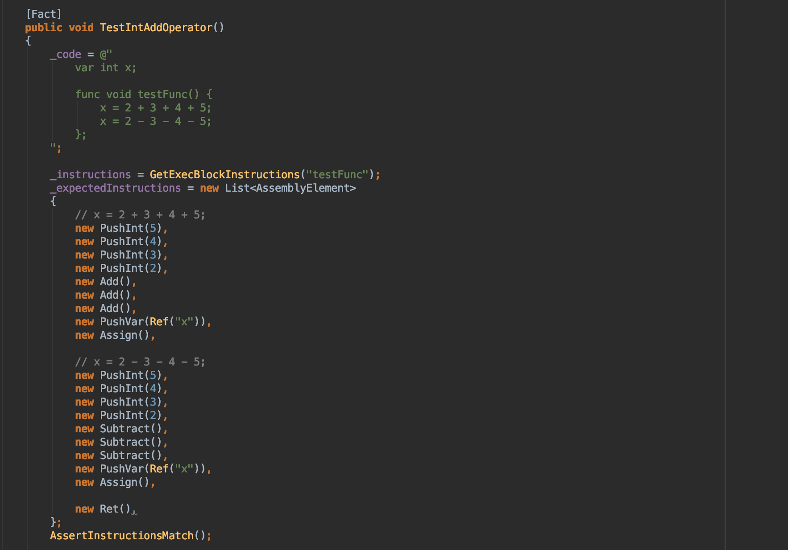

C# + Gothic + ANTLR4 -
we're making the compiler!
About us
Artur Kasperek
- Dzieje Khorinis programmers coordinator
- JS Fullstack Freelance developer
- Computer Science student
About us
Krzysztof Jura <kisioj@gmail.com>
- Software developer
- Programming teacher (C, C++, Python)
- PyCzest founder (fb.com/pyczest)

Tools
- 3D World Editor
- Mod Package Builder
- Daedalus Compiler
Daedalus

Daedalus
- Gothic I and II scripting language
- has C-like syntax
- compiled to Daedalus bytecode
instance PC_Thief_DI(Npc_Default)
{
name[0] = "Diego";
guild = GIL_NONE;
npcType = NPCTYPE_FRIEND;
aivar[AIV_ToughGuy] = TRUE;
B_SetAttributesToChapter(self,6);
fight_tactic = FAI_HUMAN_MASTER;
EquipItem(self,ItMw_1h_Sld_Sword);
daily_routine = Rtn_Start_31;
...
};
Daedalus Compiler

Daedalus flaws
- no for or while loop
- has classes but no methods
- requires ; after }
- constants can be modified
Compiler
A compiler is computer software that transforms computer code written in one programming language (the source language) into another programming language (the target language).
How does the compiler work?
Compilation
1. lexical analysis
2. parsing
3. semantic analysis
4. bytecode generation
1. Lexical analysis
2. Parsing
3. Semantic analysis
4. Code generation
Daedalus Compiler progress
Do we write tests ?

Yes !
We have unit tests
We use CircleCI to run tests